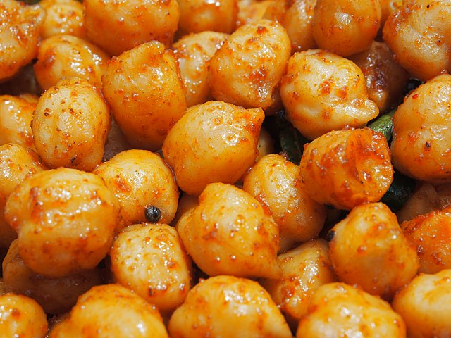

Chickpeas Recipe

The finished dish - Boiled Chickpeas!
Ingredients
- 6 cups of water
- 1 cup of dry chickpeas
- 1/2 tsp of baking soda x2
Steps
- Soak the chickpeas overnight in water and add 1/2 tsp of baking soda.
- Use a strainer to get rid of the liquid and rinse the chickpeas.
- Add the chickpeas, 6 cups of water, another 1/2 tsp of baking soda to a pot.
- Bring to a boil.
- Stir, get rid of any resulting foam, reduce the heat to a simmer.
- Cover the pot and let cook for 45 minutes.
- Remove from heat, use the strainer to dispose of the cooking liquid.
- Enjoy your chickpeas! :)
Back to Main Recipes Page